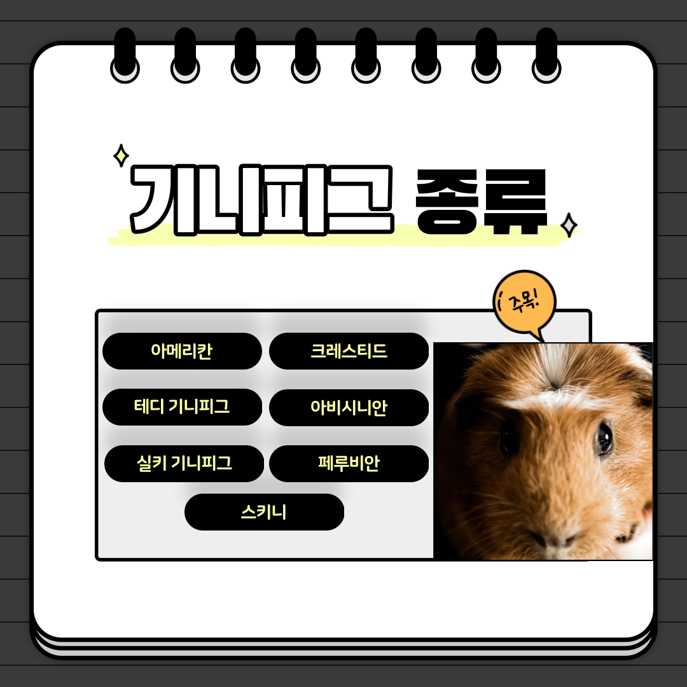

안녕하십니까 기니피그 종류에 관해 보여드리겠습니다.
기니피그는 '미국 기니피그 브리더 협회'에서 인정한 13개의 품종이 있으나 이 협회에 인정받지 못했다고 해서 품종으로 인정받지 못한 것은 아니다. 해당 협회는 협회 중 가장 잘 알려진 곳이기는 하나 수많은 협회들 중 하나일 뿐이기 때문. 털이 엄청 긴 '실키', '텍셀' 같은 장모종에서부터 '스키니'처럼 아예 털이 없는 종까지 다양하게 나뉘어져 있다. 이들 대다수는 사람이 만들어내거나 돌연변이를 번식시킨 것. 장모종은 쉽게 더러워지기 때문에 털관리를 자주 해줘야 하고 케이지 역시 깨끗하게 관리해야 한다. 품종명에 세틴이라는 단어가 붙으면 털에서 광택이 난다는 뜻이다. 아래는 미국 기니피그 브리더 협회에서 인정한 품종이다. 아비시니안(Abyssinian) 아비시니안 기니피그는 1800년경 영국에서 처음 나온 품종이며, 세틴이라는 이름이 붙은 품종은 털에 특유의 윤기가 흐른다. 아비니시안 기니피그의 몸에는 특징적인 여러 개의 가마가 소용돌이처럼 서있으며 품종 기준에 의하면 8개 이상의 가마가 있어야 한다. 털길이는 3.5cm정도. 아메리칸(American) 가장 흔하게 볼 수 있는 품종이다. 반드시 흰색/검은색/갈색의 털이 난다는 점이 특징이다. '삼색이'가 바로 이 품종이다. 털길이는 3cm정도. 코로넷(Coronet) 머리에 가마가 있는 크레스티드 기니피그와 털이 긴 실키 기니피그의 혼혈 품종이다. 털이 길고 머리의 가마가 왕관처럼 보인다고 해서 붙은 이름이다. 품종으로 인정받은 것은 1997년. 페루비안(Peruvian) 기니피그 품종 중 가장 긴 털을 가졌으며 1800년경 프랑스에서 개량된 것으로 추정된다. 털이 매우 긴 것 외에도 엉덩이와 머리부분에 가마가 있는 것이 특징이다. 실키(Silky) 머리의 털은 아메리칸 종처럼 짧지만 몸통의 털은 길다. 품종으로 인정받은 것은 1973년이다. 페루비안 기니피그와 다른 점은 머리, 엉덩이 가마의 유무이다. 테디(Teddy) 털은 아메리카 기니피그처럼 짧으나 곱슬곱슬하게 일어서있다. 렉스(Rex) 영국이 산지이며 테디와 동일한 특징을 가지고 있으나 유전자가 다르다. 텍셀(Texel) 1980년경 영국에서 개량되었으며 실키와 렉셀의 혼혈종이다. 실키처럼 긴 털을 가졌으나 렉셀처럼 곱슬거리는 것이 특징. 화이트 크레스티드(White crested) 짧은 털을 가졌으며 머리에 하얀색 털이 큰 점처럼 있는 것이 특징. 품종으로 인정받으려면 단색의 몸과 하얀색 머리털이 있어야 한다. 이때 머리털의 색상은 다른 색과 섞이지 않은 순수한 하얀색일 것을 요구한다. 아래는 그 밖의 품종이다. 잉글리시(English) 품종으로 인정받기 위해서는 털길이가 3.8cm를 넘어서는 안된다. 아메리칸종과 비슷하게 생겨 구분하기 매우 어려우나 코와 귀모양이 약간 다르다. 아메리칸 종보다 코가 둥글둥글한 편이며 귀 모양 역시 조금 더 반듯한 편. 털색 역시 '삼색이' 아메리칸 종과는 달리 1~2개가 나타난다. 메리노(Merino) 털이 길고 곱슬곱슬한점은 텍셀과 비슷하지만 머리에 가마가 있다. 몸 뒤쪽의 털이 다른 부분의 털보다 길다. 알파카(Alpaca) 메리노 페루비안이라고도 불리며 미완성 품종이다. 페루비안과 텍셀의 혼혈종이며 긴 털과 두 개의 가마가 특징. 보클(Boucle) 프랑스어로 '곱슬곱슬'이라는 뜻이며 말그대로 곱슬곱슬한 털을 가지고 있다. 알파카 종과 같은 페루비안과 텍셀의 혼혈종. 온몸의 털은 물론 콧수염까지도 곱슬거린다고 한다. 룬칼야(Lunkarya) 미완성 품종이며 스칸디나비아반도에서 개량중. 스키니(Skinny) 몸에 털이 없는 것이 특징이지만 코부분에 약간씩 존재하기도 한다. 털이 없어서 추위에 아주 약하기 때문에 온도관리를 잘 해줘야 한다.
